This is personal study note
Copyright and original reference are from:
https://www.youtube.com/watch?v=MCgvlTdZGBw&list=PL9mhQYIlKEhdjUeH15EBJvhdEgjMZa798&index=2
================================================================================
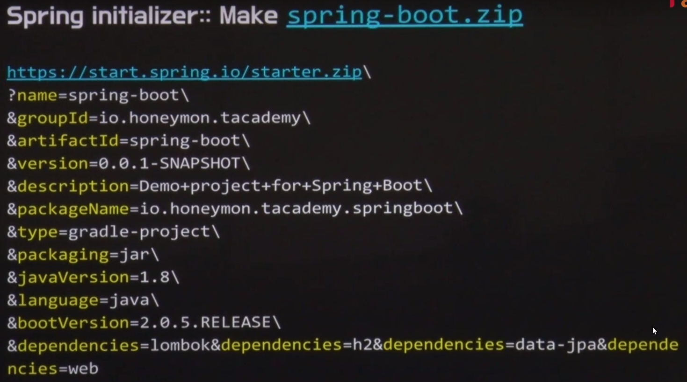
================================================================================
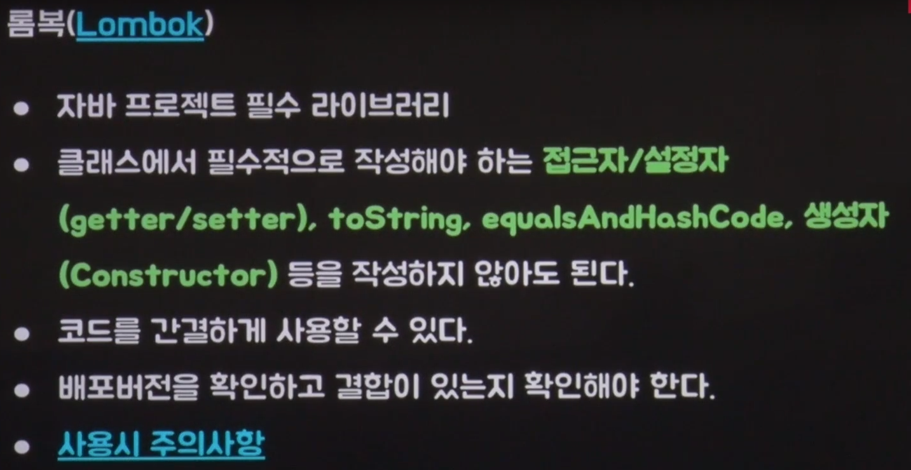
================================================================================
================================================================================
그래들 플러그인 설치
- Help
- Eclipse Marketplace
- Search: gradle
- Install: Buildship Gradle Integration 2.0
================================================================================
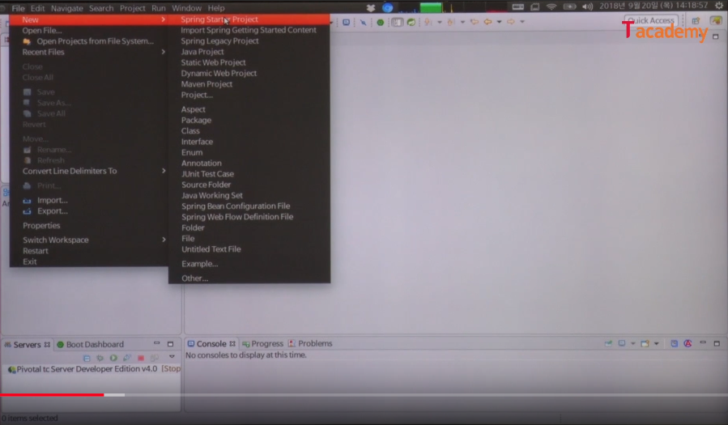
- New -> Spring Starter Project
================================================================================
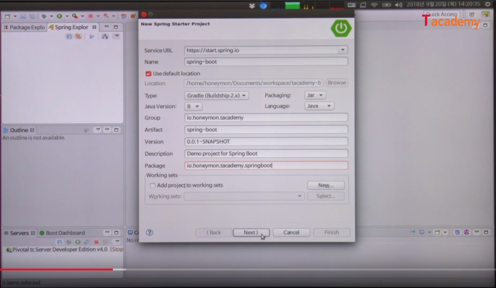
================================================================================
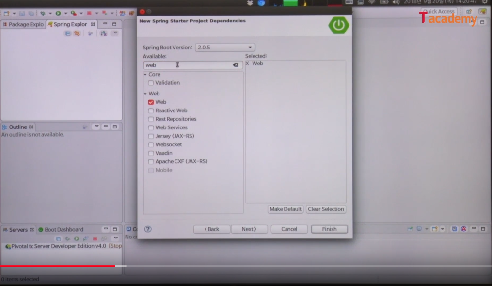
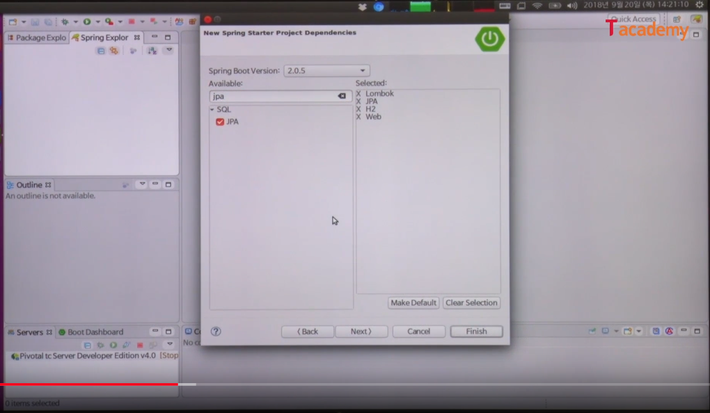
- 의존성 추가
================================================================================
인터넷이 안되면 스프링부터 프로젝트 만들기 불가능
인터넷이 제한된 곳:
- 내부에 메이븐 저장소를 만들고, 인트라넷으로 사용
- 메이븐 저장소만 외부접속 허용
================================================================================
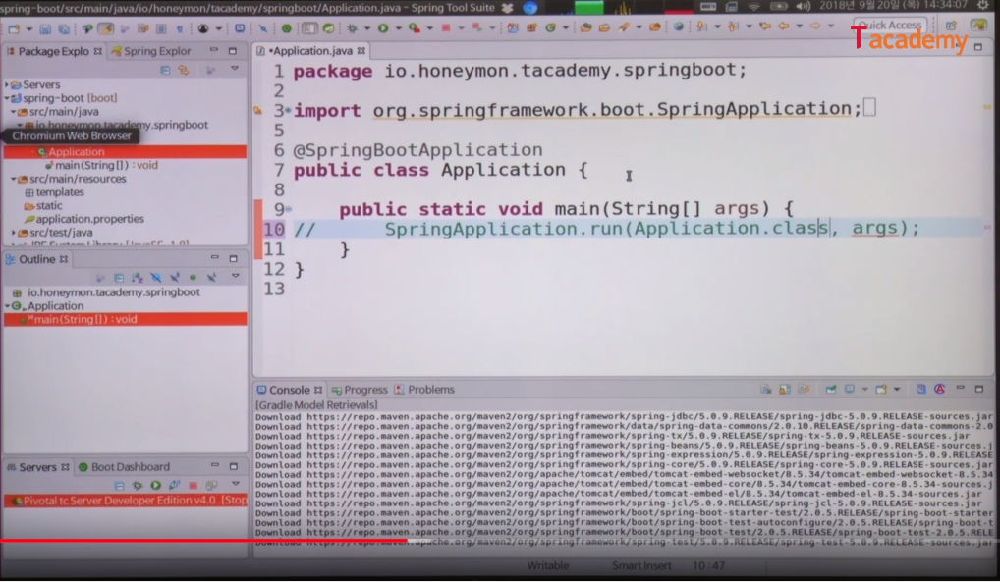
- 자바어플리케이션 안에서, SpringApplication.run() 실행 클래스를 통해서,
- 스프링 IoC 컨테이너를 띄우고, SpringBootApplication 어노테이션이 있는 위치를 기준으로 해서
- 하향식으로 스프링 bean 들을 탐색
================================================================================
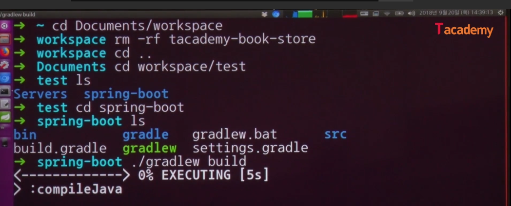
- 그래들 wrapper 에 의해서 그래들빌드 가 실행됨
================================================================================
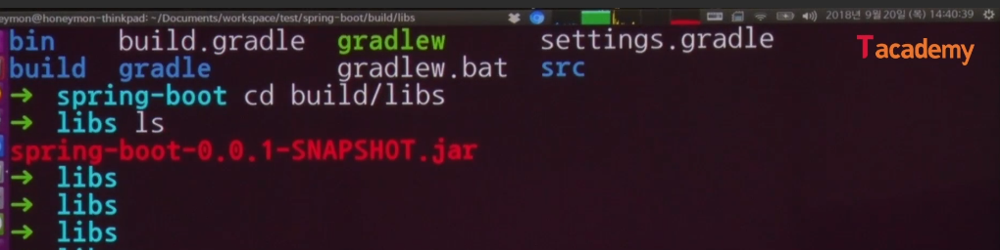
================================================================================
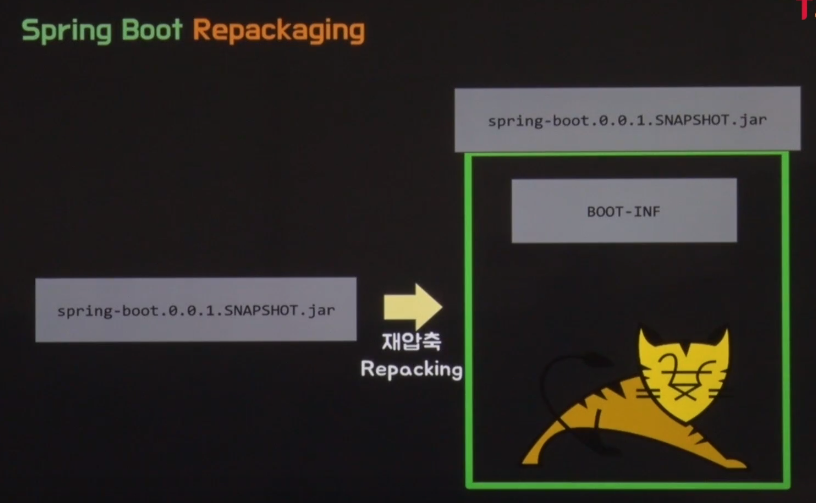
================================================================================
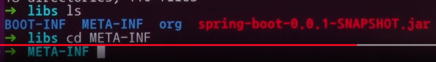
================================================================================
META-INF
- 자바 어플리케이션을 압축할 때, MANIFEST.MF 가 버전 정보를 가지고 있다
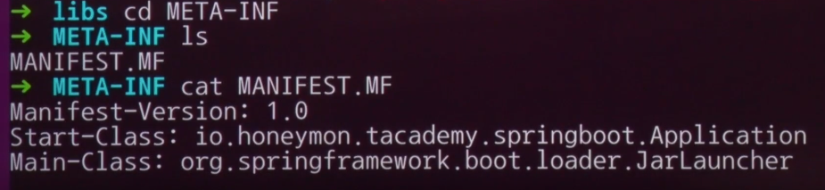
================================================================================
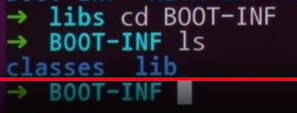
libs: 선언된 의존성 라이브러리
================================================================================
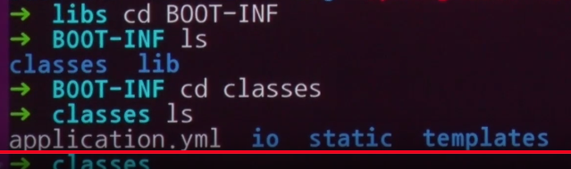
================================================================================
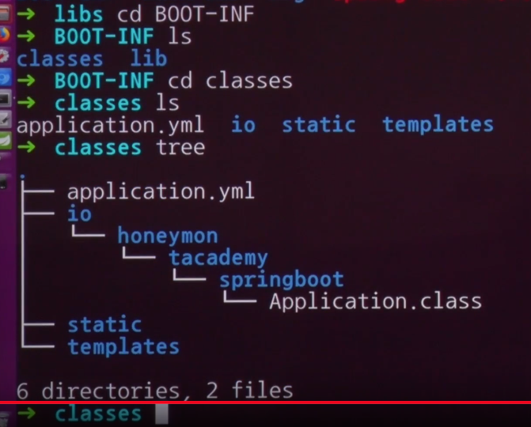
================================================================================
- 실행
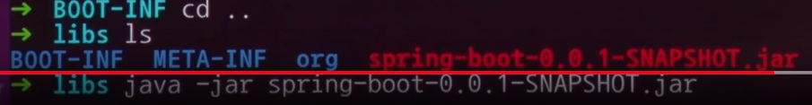
================================================================================
- 빌드하기
================================================================================
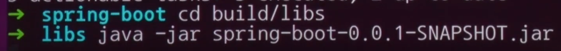
- 실행하기
================================================================================
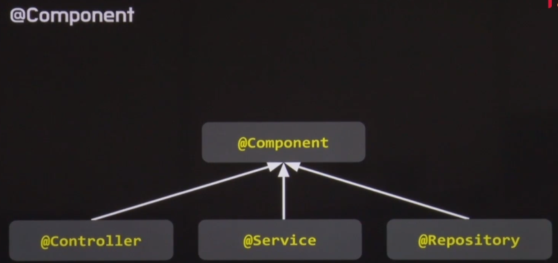
================================================================================
@Bean
- 개발자가 제어할 수 없는 외부의 다른사람이 작성한 클래스들을 스프링 bean 으로 등록할 때 사용됨
@Component
- 내가 작성한 컴포넌트 클래스에 붙여넣는다
================================================================================
스프링 bean 객체
- 스프링 IoC 컨테이너에서 생성하고, 호출하고, 소멸하기까지의 라이프 사이클 (생명주기)
를 관리하는 객체를 말한다
================================================================================
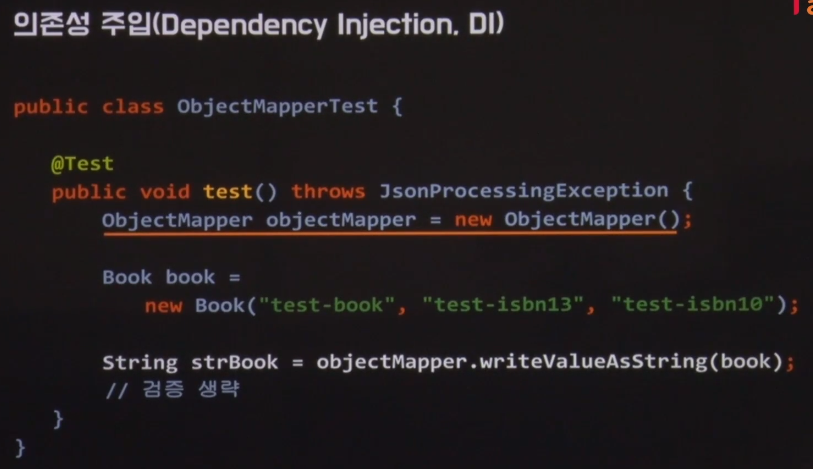
- DI: 스프링에서 가장 중요한 개념
- Jackson object -> JSON 변환 라이브러리
- 일반적으로 객체의 인스턴스를 만드는 모습
- 일반적으로 라이브러리 기능을 사용하는 방식
================================================================================
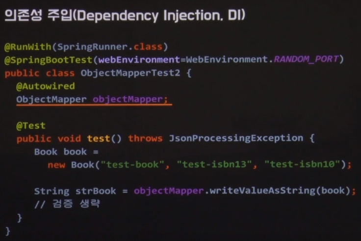
- 스프링 같은 IoC 컨테이너에서는 objectMapper 를 인스턴스로 직접 만들 필요가 없다
- ApplicationContext 가 구동되는 상황에서,
- 어딘가에서, objectMapper 인스턴스를 스프링 bean 으로 등록 해놓았기 때문에,
- @Autowired 어노테이션을 필드에 정의해놓으면,
- 스프링 컨테이너가, "내가 가지고 있는 objectMapper 를 주입을 해주면 되겠네" 하고 인스턴스를 주입해줌
- 주입된 objectMapper 인스턴스를 바로 사용함
- 소스코드가 진행 되다가, 제어가 프레임워크쪽으로 넘어가서 (IoC, Inversion of Control), 프레임워크쪽에서 인스턴스를 주입하고, 다시 소스코드가 진행된다
================================================================================
- 스프링진영에서 권장
- setter 를 통해 주입
- 필드에 어노테이션
================================================================================
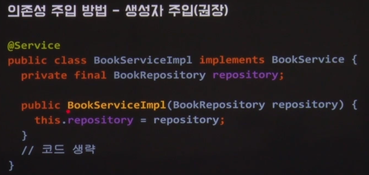
- 생성자 주입 방식을 쓸때, 생성자가 하나만 있어야 사용가능함
- @Service 가 있어서, 스프링프레임워크는 "이게 내가 관리해야할 컴포넌트구나" 하고 생각함
- "이 컴포넌트 안에서, 내가 관리하고 있는 BookRepository 를 쓰네" 하고 인스턴스를 주입해줌
================================================================================
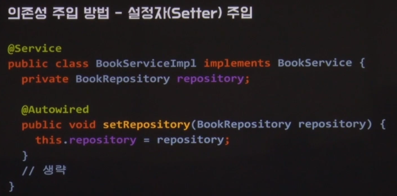
setter 메서드에 @Autowired 또는 BookRepository 파라미터 타입 앞쪽에 @Autowired
================================================================================